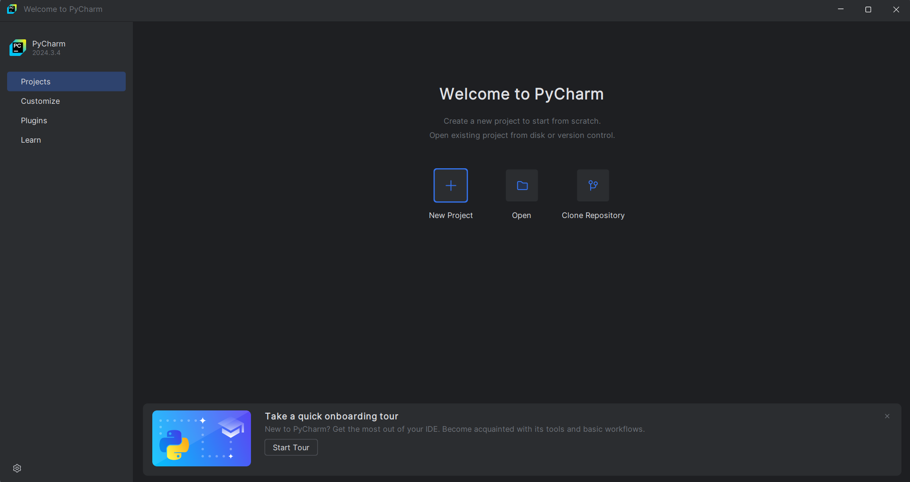
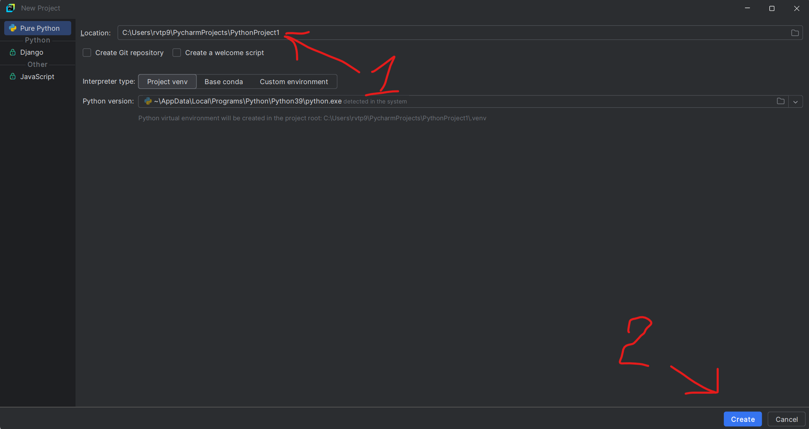
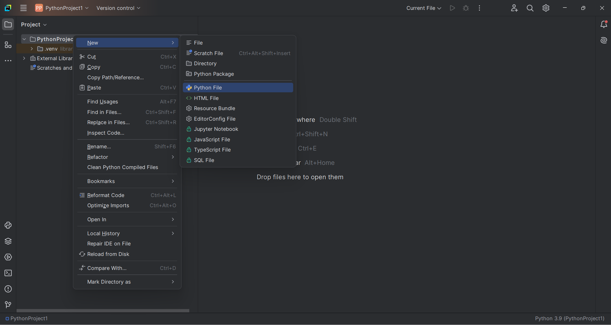
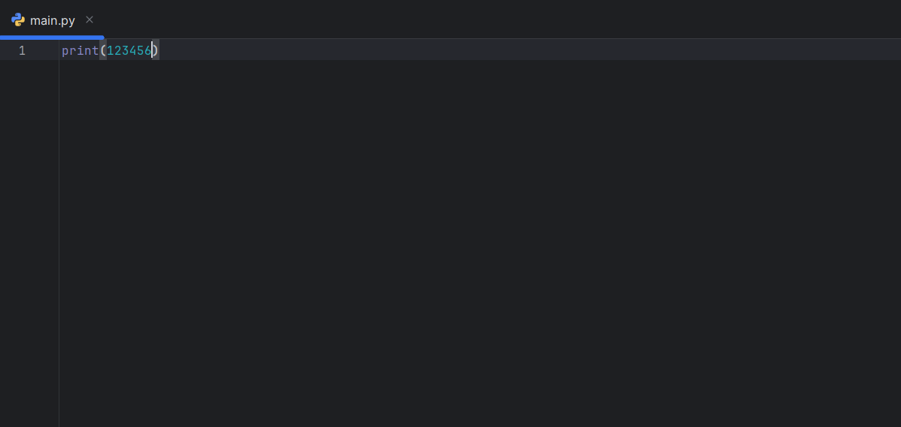

Python
Что такое Python?
Среди всех языков програмирования в текстовой среде самый лёгкий - это python. Этот язык очень прост в использовании,
но очень полезен на практике. Если захотеть - этот язык можно выучить за 30 дней с нуля. В этой статье ты
научишься писать не только консольные приложения, но и приложения в отдельном окне окне. Удачи!
Скачиваем Python
Чтобы програмировать на Python - нужно его скачать. Рекомендуемая версия для скачивания - 3.9. Она стабильно работает на всех устройствах.
Инструкция по установке:
Среда для разработки на Python
Среда разработки (IDE) - программа где будет написан код. Для Разработки на Python есть несколько IDE:
PyCharm community edition (JetBrains)
Самая лучшая и удобная по нашему мнению программа для разработки на Python. В ней есть все необходимые функции
- терминал, библиотека , консоль и многое другое. Все в этой статье будет показыкватс в этой среде.
Скачать PyCharm community edition
Visual Studio Code (JetBrains)
Visual Studio Code - не только подходит для разработки на Python - на ней можно писать практически на всех языках,
Но она трудна в програмировании на python
Скачать Visual Studio Code
Notepad++
Notepad++ - Это улучшенный блокнот. Он поддерживает много языков програмирования, но в нём мало подсказок.
Скачать Notepad++
Sublime text
Sublime text - Это тоже улучшенный блокнот с поддержкой языков програмирования, но для того что-бы были подсказки нужно установить специальный плагин - Emmet
Скачать SubLime text
Создание проекта
Откройте PyCharm и нажмите на кнопку New Project.

В разделе location в самом конце пути выберите название проекта и нажмите Create

Создайте программу под и назовите её main.py (ПКМ по папке с проектом -> New -> Python File)

Первая программа
Пришло время создать первую программу. В ней будет использоватся комманда print() - эта комманда выводит текст и числа в консоль.
В это примере мы будем использовать цифры 123456 - комманда будет выглядить вот таким образом. Введите этот код и запустите программу

...
...
...
Среди всех языков програмирования в текстовой среде самый лёгкий - это python. Этот язык очень прост в использовании,
но очень полезен на практике. Если захотеть - этот язык можно выучить за 30 дней с нуля. В этой статье ты
научишься писать не только консольные приложения, но и приложения в отдельном окне окне. Удачи!
Чтобы програмировать на Python - нужно его скачать. Рекомендуемая версия для скачивания - 3.9. Она стабильно работает на всех устройствах.
Инструкция по установке:
Среда для разработки на Python
Среда разработки (IDE) - программа где будет написан код. Для Разработки на Python есть несколько IDE:
PyCharm community edition (JetBrains)
Самая лучшая и удобная по нашему мнению программа для разработки на Python. В ней есть все необходимые функции
- терминал, библиотека , консоль и многое другое. Все в этой статье будет показыкватс в этой среде.
Скачать PyCharm community edition
Visual Studio Code (JetBrains)
Visual Studio Code - не только подходит для разработки на Python - на ней можно писать практически на всех языках,
Но она трудна в програмировании на python
Скачать Visual Studio Code
Notepad++
Notepad++ - Это улучшенный блокнот. Он поддерживает много языков програмирования, но в нём мало подсказок.
Скачать Notepad++
Sublime text
Sublime text - Это тоже улучшенный блокнот с поддержкой языков програмирования, но для того что-бы были подсказки нужно установить специальный плагин - Emmet
Скачать SubLime text
Пришло время создать первую программу. В ней будет использоватся комманда print() - эта комманда выводит текст и числа в консоль.
В это примере мы будем использовать цифры 123456 - комманда будет выглядить вот таким образом. Введите этот код и запустите программу